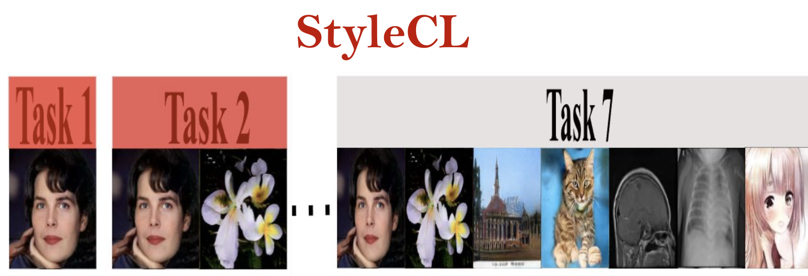
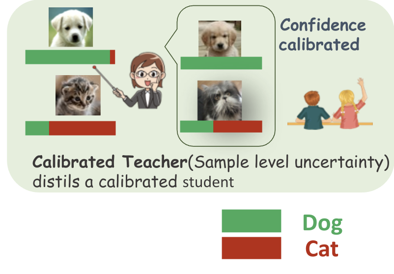
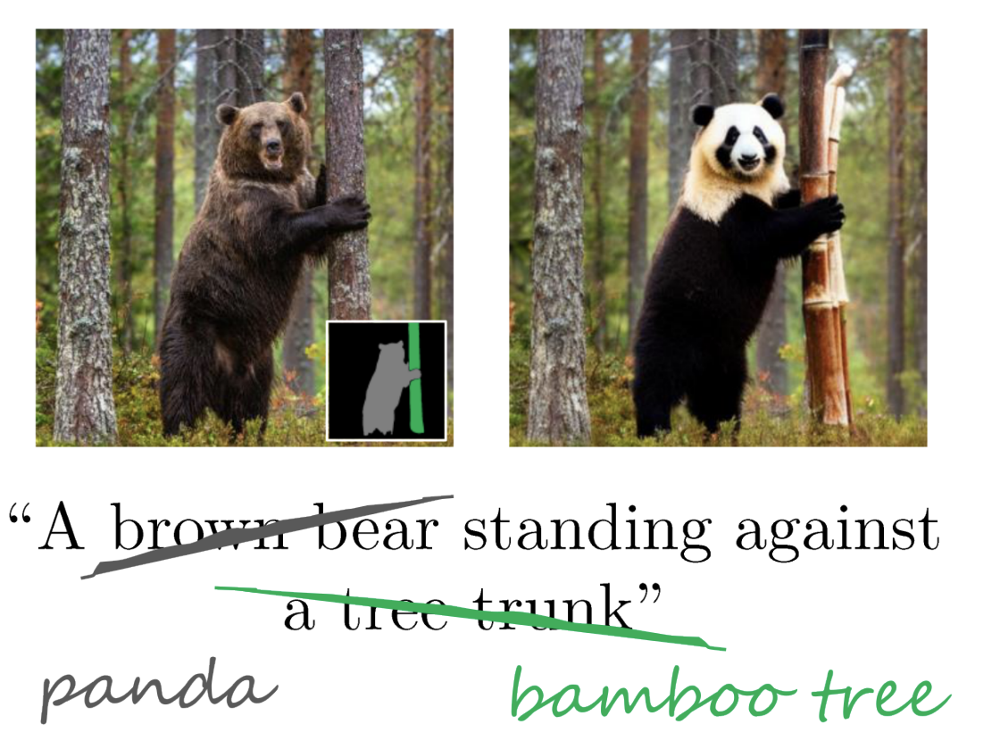
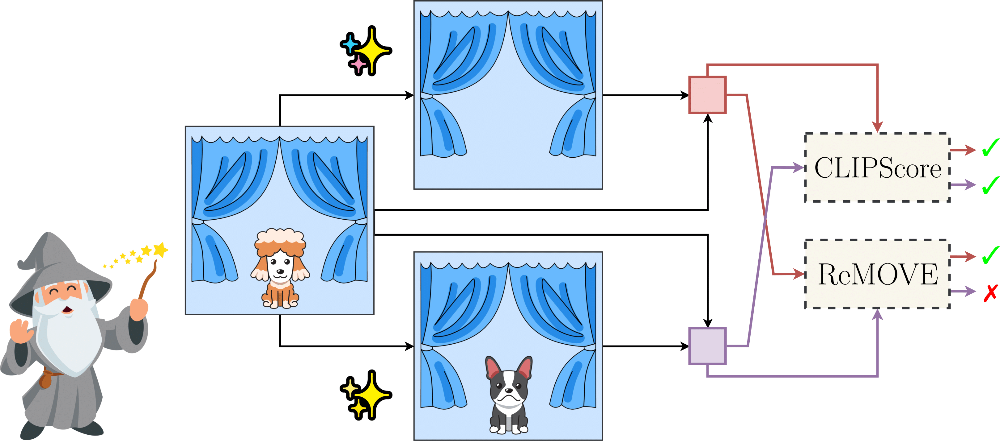

|
I'm a researcher in visual computing. My work spans: computer vision, reliable and robust machine learning, and computer graphics. I'm a Principal Scientist in Deep Learning and Artificial Intelligence Group (DLAI), TCS Research, IIT Delhi, India. My doctoral research advised by Prof. Chetan Arora at IIT Delhi is centered on proposing novel methods to enhance reliability in deep neural networks (DNNs) Prior to this, I was fortunate to be working with Prof. Ramakrishna Kakarala at Nanyang Technological University on High Dynamic Range Imaging algorithms which formed a part of the image processing pipeline aimed at smartphone cameras. Our research was recognized with the Best Student Paper award at the 2012 SPIE conference in Burlingame, California. I completed my master's degree at DCUs School of Electronic Engineering and Computing in 2014, advised by Prof. Noel O'Connor and Prof. Alan Smeaton. I focused on reducing false alarms in surveillance camera networks. The result of this work, a portion of our research was licensed to Netwatch Systems. In June 2015, I started working as a research scientist at TCS Research. Since the, I have been involved in various projects related to augmented reality. Specifically, I have focused on optimizing the layout of labels for immersive experiences and developing gestural interfaces for head-mounted devices and smartphones. As a team leader, I have overseen the development of a cost-effective industrial inspection framework. Recently, my team has been working on creative content generation (images, videos, 3D/4D data). Outside work, I enjoy painting, traveling, cooking and baking, composting, planting tree saplings, and music. > Email / Google Scholar / Twitter / Github / Travel |
{kind=link}
|
Representative papers spanning the following themes reliable machine learning (out-of-distribution detection, uncertainty quantification, continual learning), 3D/4D/2D computer vision are highlighted. |
|  |
Adarsh K, Anmol Garg , Ramya Hebbalaguppe, Prathosh AP, Transactions on Machine Learning Research (accepted) , 2024 StyleGAN is one of the most versatile generative models that have emerged in recent times. However, when it is trained continually on a stream of data (potentially previously unseen distributions), it tends to forget the distribution it has learned, as is the case with any other generative model, due to catastrophic forgetting. Recent studies have shown that the latent space of StyleGAN is very versatile, as data from a variety of distributions can be inverted onto it. In this paper, we propose StyleCL, a method that leverages this property to enable lifelong learning in StyleGAN without forgetting. Specifically, given a StyleGAN trained on a certain task (dataset), we propose to learn a latent subspace characterized by a set of dictionary vectors in its latent space, one for each novel, unseen task (or dataset). We also learn a relatively small set of parameters (feature adaptors) in the weight space to complement the dictionary learning in the latent space. Furthermore, we introduce a method that utilizes the similarity between tasks to effectively reuse the feature adaptor parameters from the previous tasks, aiding in the learning process for the current task at hand. Our approach guarantees that the parameters from previous tasks are reused only if they contribute to a beneficial forward transfer of knowledge. Remarkably, StyleCL avoids catastrophic forgetting because the set of dictionary and the feature adaptor parameters are unique for each task. We demonstrate that our method, StyleCL, achieves better generation quality on multiple datasets with significantly fewer additional parameters per task compared to previous methods. This is a consequence of learning task-specific dictionaries in the latent space, which has a much lower dimensionality compared to the weight space. |
 |
Ramya Hebbalaguppe, Mayank Baranwal, Kartik Anand, Chetan Arora, ACCV , 2024 -- [Oral Presentation] (top 5.6 %) [paper] Knowledge Distillation for Calibration (KD(C)) endeavors to deploy lightweight models that are also reliable, we delve into the realm of knowledge distillation, extending its traditional function of transferring accuracy from teacher networks to student networks. Through this exploration, we have discovered a novel approach to calibrating models effectively. We present, arguably for the first time, compelling theoretical as well as empirical evidence that model calibration can be achieved without sacrificing accuracy through knowledge distillation. Our implementation of knowledge distillation not only guarantees enhanced model calibration but also outperforms the accuracy obtained through conventional training from scratch in specific cases. This innovative approach enables us to simultaneously accomplish the dual objectives of optimal calibration and improved accuracy. |
 |
Goirik Chakrabarty, Aditya Chandrasekar, Ramya Hebbalaguppe, Prathosh AP, ACM International Conference on Multimedia , 2024 [paper] Recent developments in the field of diffusion models have demonstrated an exceptional capacity to generate high-quality prompt-conditioned image edits. Nevertheless, previous approaches have primarily relied on textual prompts for image editing, which tend to be less effective when making precise edits to specific objects or fine-grained regions within a scene containing single/multiple objects. We introduce a novel framework for zero-shot localized multi-object editing through a multi-diffusion process to overcome this challenge. This framework empowers users to perform various operations on objects within an image, such as adding, replacing, or editing many objects in a complex scene in one pass. We also curate and release a dataset dedicated to multi-object editing, named LoMOE-Bench. Our experiments against existing state-of-the-art methods demonstrate the improved effectiveness of our approach in terms of both image editing quality and inference speed. |
|  |
Aditya Chandrasekar, Goirik Chakrabarty, Jai Bardhan, Ramya Hebbalaguppe, Prathosh AP, IEEE/CVF Conference on Computer Vision and Pattern Recognition (CVPRW) The First Workshop on the Evaluation of Generative Foundation Models, 2024 project page We introduce ReMOVE, a novel reference-free metric for assessing object erasure efficacy in diffusion-based image editing models post-generation. Unlike existing measures such as LPIPS and CLIPScore, ReMOVE addresses the challenge of evaluating inpainting without a reference image, common in practical scenarios. ReMOVE effectively distinguishes between object removal and replacement, a key issue in diffusion models due to stochastic nature of image generation. |
|
|
Shubh Maheshwari, Rahul Narain, Ramya Hebbalaguppe, IEEE/CVF Conference on Computer Vision and Pattern Recognition (CVPR), 2023 project page Animating a virtual character based on a real performance of an actor is a challenging task that currently requires expensive motion capture setups and additional effort by expert animators, rendering it accessible only to large production houses. The goal of our work is to democratize this task by developing a frugal alternative termed Transfer4D that uses only commodity depth sensors and further reduces animators' effort by automating the rigging and animation transfer process. Our approach can transfer motion from an incomplete, single-view depth video to a semantically similar target mesh, unlike prior works that make a stricter assumption on the source to be noise-free and watertight. |

|
Rishabh Patra*, Ramya Hebbalaguppe*, Tirtharaj Dash, Gautam Shroff, Lovekesh Vig, IEEE/CVF Winter Conference on Applications of Computer Vision, 2023 -- [Spotlight Presentation] (top 10%) project page We demonstrate state-of-the-art Deep Neural Network calibration performance via proposing a differentiable loss term that can be used effectively in gradient descent optimisation and dynamic data pruning strategy not only enhances legitimate high confidence samples to enhance trust in DNN classifiers but also reduce the training time for calibration. |

|
Ramya Hebbalaguppe, Soumya Suvra Ghosal, Jatin Prakash, Harshad Khadilkar, Chetan Arora, European Conference on Machine Learning , 2022 project page We propose a novel Compounded Corruption(CnC) technique for the Out-of-Distribution data augmentation. One of the major advantages of CnC is that it does not require any hold-out data apart from the training set. Our extensive comparison with 20 methods from the major conferences in last 4 years show that a model trained using CnC based data augmentation, significantly outperforms SOTA, both in terms of OOD detection accuracy as well as inference time. |

|
Ramya Hebbalaguppe*, Jatin Prakash, Neelabh Madan*, Chetan Arora, IEEE/CVF Conference on Computer Vision and Pattern Recognition (CVPR) , 2022 -- [ORAL Presentation] (top 4%) project page We propose a novel auxiliary loss function: Multi-class Difference in Confidence and Accuracy (MDCA) for Deep Neural Network calibration. The loss can be combined with any application specific classification losses for image, NLP, Speech domains. We also demonstrate the utility of the loss in semantic segmentation tasks. |
Current Research Team, Research and Innovation Park, IIT Delhi
Alumni
(The list of researchers include full-time, pre-doctoral fellows, and research interns.)
- Adarsh Kappiyath → Doctoral student at the University of Surrey, UK
- Meghal Dani → Doctoral student at IMPRS-IS, Max Planck School
- Surabhi Nath → Doctoral student at the Max Planck School of Cognition and the MPI for Biological Cybernetics
- Goirik Chakrabarty → Doctoral student, University G√∂ttingen
- Jatin Prakash → Doctoral student at New York University
- Neelabh Madan → Doctoral student at New York University
- Gaurav Gupta → Doctoral student at Rice University
- Apoorv Khattar → Doctoral student at University of Manchester, UK
- Neel Rakholia → Masters Student at Stanford
- Sharan Yalburgi → Visiting researcher at MIT proabilistic ML project
- Srinidhi Hegde → Masters Student at UMD
- Shubh Maheshwari → Graduate student at UCSD
- Pranay Gupta → Masters student at CMU
- Jitender Maurya → Researcher, Toshiba
- Archie Gupta → SDE, Microsoft
- Varun Jain → Masters student at CMU → Microsoft Fellow
- Additya Popli → SDE at Google
- Kshitijz Jain → Grad student at IITD
- Aravind Udupa → Grad student at IITD
- Soumya Suvra Ghosal → Masters Student at University of Wisconsin
- Gaurav Garg → Accenture
- Ramakrishna Perla → TTEC Digital
Academia: Thesis supervision
- Aditya C (IISc, Bangalore) - co-supervisor for M. Tech Thesis Topic: Metrics for image editing
- Shreyash Mohatta (BITS, Goa) - supervised M.Tech thesis on Egocentric Realtime Gesture Recognition with Dr. Ashwin Srinivasan → Masters student at NCSU
- Rishabh Patra (BITS, Goa)- supervised B.Tech thesis on uncertainty calibration with Dr. Tirtharaj Dash → SDE Amazon
- Ashwin Vaswani (BITS, Goa) - supervised BTP on Data-free Iterative Knowledge Distillation with Prof. Ashwin Srinivasan → Google Research → Masters student at CMU
- Het Shah (BITS, Goa) - supervised BTP on Knowledge Distillation, Pruning and Quantization with Prof. Ashwin Srinivasan → Research Associate at Google Research